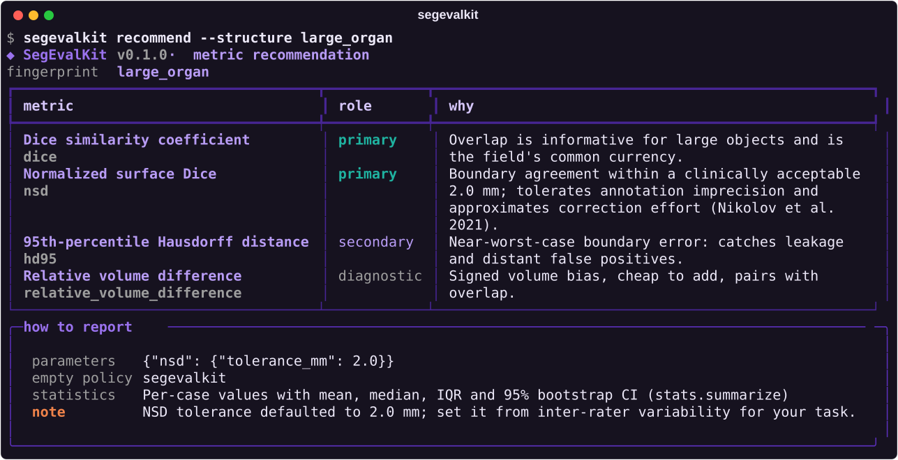

Key features
Everything an evaluation needs, in one place
Every family of metric
Overlap, volume, surface distance, topology, lesion-wise detection, calibration and agreement, computed from one cached context per pair.
Explicit, tested conventions
Empty masks, HD95 variants, ASSD vs MASD, tolerances and connectivity are arguments, recorded with the results and checked against MONAI, MedPy and DeepMind.
Knows which metric to use
A Metrics Reloaded-style recommender that derives a metric set from your problem, and a catalogue of metric pitfalls with worked numeric examples.
A standard interface
Reads flat, folder and per-structure NIfTI layouts, checks geometry, and writes one documented, plain-CSV results format.
Statistics you can defend
Bootstrap confidence intervals, paired tests with multiplicity correction, effect sizes, and challenge-style rankings with bootstrap stability.
See the errors
Colour-vision-safe error overlays, tri-planar views, 3D surface-distance maps and a self-contained HTML report; GPU-accelerated surface distances.
Get started
From predictions to conclusions in three steps
Describe what to evaluate
Name the structures, their label ids, and the metrics. Unsure which metrics? Ask segevalkit recommend.
import segevalkit as sek ev = sek.Evaluator( labels={"liver": 1, "tumour": 2}, metrics=["default", "detection"], )
Evaluate the folders
The reference defines the case list; missing predictions score as empty. Runs in parallel, or on the GPU.
res = ev.evaluate(
"predictions/", "labelsTr/",
n_workers=8, out_dir="eval/",
)
res.summary() # mean, IQR, 95% CIAnalyse and report
Compare methods with paired tests, draw the figures, and write a single-file HTML report.
from segevalkit.stats import compare compare(res_a, res_b, metrics=["dice", "hd95"]) sek.plotting.metric_distribution( res, "dice") sek.report.build_report( res, "report.html")
Command line
A terminal interface that explains itself
Every command prints what it is doing and why: evaluation progress, summary tables with the better direction of each metric, paired comparisons, rankings and metric recommendations with their rationale.
segevalkit evaluate: score a folder, optionally with an HTML reportsegevalkit compareandrank: paired statistics and ranking stabilitysegevalkit recommend: which metrics for your problemsegevalkit visualize: overlays, projections and 3D surface maps

Showcase
See it on real data
Three official models (nnU-Net, MedFormer, TotalSegmentator) on eight PanTS test CTs, from per-case statistics to the errors on the image. Every figure is an unedited SegEvalKit output.
Violet agreement, orange missed, teal added. Eight cases illustrate the library; they are not a benchmark.
The metrics
Seven families of metrics, seven questions
Evaluate like the benchmark does
Presets reproduce the official protocols of 25 datasets and challenges: MSD, FLARE22, KiTS, BraTS 2023, AMOS, BTCV, ISLES'22, autoPET, TopCoW, PanTS and more.